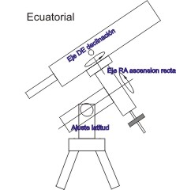
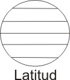
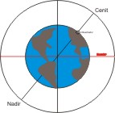
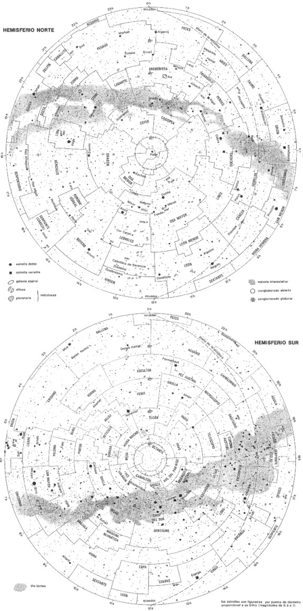
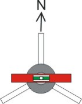

astronovel.dyndns.org
|
|
|
|
astronovel.dyndns.org |
|
|
|
||||
| 1º- Para empezar | ||||
|
¿Que es un telescopio? |
||||
|
|
Es el instrumento óptico que permite ver objetos lejanos con mucho más
detalle que a simple vista. Esta compuesto de un objetivo y un ocular.
El objetivo en un telescopio es la lente o el espejo de mayor tamaño.
Los datos ha tener en cuenta en el objetivo son la distancia focal (mm) y
el diámetro (mm). En función de estos, se determina la relación focal
(F/), que es la distancia
focal entre el diámetro.
Ejemplos: tenemos un objetivo de 1000 mm DF (distancia focal) y 200 mm D
(diámetro),
su relación seria 1000DF/200D= 5 ( f/5 )
Ahora tenemos un objetivo de 1000 mm DF (distancia focal) y 100 mm D
(diámetro),
su relación seria 1000DF/100D= 10 ( f/10 )
Con estos ejemplos tendremos dos telescopios que nos darán los mismos
aumentos, pero distintas relaciones focales. ¿Pero que es mejor? Este ya
es otro tema que mas adelante se vera. Existen
varios tipos de telescopio en función de su objetivo: |
|
||
| Refractores,
son los telescopios que su objetivo es
una lente convergente. |
||||
| Reflectores, los que su objetivo es un
espejo cóncavo.
Hay de dos tipos: Reflectores NEWTONIANOS |
||||
| Catadióptricos, que su objetivo poseen un
espejo cóncavo y una lente correctora.
Hay de tres tipos: SCHMIDT-NEWTON
|
||||
| Otra de la parte fundamental de cualquier tipo de telescopio es el ocular que también es una o varias lentes, de distancia focal muy corta con respecto al objetivo, y donde el observador sitúa el ojo. Dos datos a tener en cuenta en los oculares uno su distancia focal (mm), y otro su campo aparente (º), cuanto mayor sea el campo aparente mas agradable es la visión. | ||||
|
Conociendo ya algo del objetivo y del ocular podemos conocer los aumentos
que nos puede dar un telescopio. Se establece que los aumentos de un telescopio ha de
estar entre su máximo, que es igual al diámetro del objetivo
multiplicado por 2, y el mínimo que seria
el diámetro del objetivo dividido por 7 para obtener una visión
lo mas nítida posible, ya que no nos serviría de nada que un
objeto se viera muy grande, si no se aprecian los detalles. |
||||
|
Ejemplos: |
Para
telescopio de 115 mm, el aumento máximo y mínimo teórico seria 230
aumentos máximos y como mínimo 16 aumentos,
para obtener una visión optima. Para
telescopio de 250 mm, el aumento máximo y mínimo teórico seria 500
aumentos máximos y como mínimo 35 aumentos,
para obtener una visión optima. |
|||
|
Calcular los aumentos de los telescopio:
X = a la
distancia focal (DF) del objetivo (o espejo según tipo telescopio) en mm
dividido por la distancia focal (DF) del ocular. |
||||
| Ejemplo telescopio de 115mm de objetivo con 900 mm DF + juego oculares de 4 mm , 12 mm y 25 mm |
900/4 = 225
aumentos = 225X 900/12
= 75 aumentos
= 75X 900/25
= 36 aumentos
= 36X |
|||
| No seria aconsejable un ocular de 3 mm, ya que nos iríamos a 300X, que estaría fuera del rango teórico de aumentos. | ||||
|
Los telescopios suelen tener acoplado un pequeño refractor que se
denomina buscador, aunque hoy en día, suelen sustituirse por una
mira laser. Su misión es servirnos de guía al objeto a observar. Ya que
incluso con el ocular de 25 mm con el telescopio del ejemplo anterior, |
|
salvo la luna, y alguna que otra estrella o planeta, de poca magnitud, seria casi imposible localizar. Para facilitar la tarea algunos buscadores suelen llevar una rejilla en forma de cruz, centrando el objeto a observar en dicha cruz, el objeto debe estar en el campo de visión del telescopio. | ||
|
|
||||
|
|
||||
| Las monturas es el soporté en el cual se apoya el telescopio. Son muchas las clases de monturas que existen. Pero las mas frecuentes son tres: | ||||
|
Altacimutales son
las monturas que se mueven en los dos planos: el horizonte o acimut,
dividido en grados (0º a 360º, desde el Norte hacia el Este) y plano
vertical o altura desde el horizonte hasta el cenit, también en grados (0º
para el horizonte a 90º para el cenit). Para determinar estas posiciones
esta montura suelen traer incorporado círculos graduados, utilizados para
ubicar objetos, o para saber la ubicación de estos. También se
pueden motorizar, y el seguimiento de un objeto se realiza moviendo tanto
en plano horizontal y vertical
al mismo tiempo. La puesta en estación es fácil , solo tener muy bien nivelada la montura en el caso de que sea motorizada, y como referencia que la marca de 0º coincida con el Norte. |
Dobson,
es la montura altacimutal mas sencilla y barata, y generalmente
empleada en grandes telescopios de aficionados. Movidas manualmente,
aunque se pueden motorizar. Su puesta en estación es sencilla basta con
estar nivelada. Y en el caso de estar motorizada debe estar bien nivelada.
|
Ecuatoriales, son las
monturas mas utilizada
por los aficionados, dado que su mayor ventaja es la posibilidad de seguir
a los objetos celestes con solo mover un eje. También puede ser
motorizado, para que el seguimiento sea automático y los objetos se
mantengan centrados en el campo visual. Es mas
compleja que la altacimutal y
es imprescindible que este correctamente alineada para que sea. Los planos
de movimiento en que se basa son el ecuador celeste (proyección del
ecuador terrestre) y la declinación DE (distancia angular en grados desde
el ecuador hasta el polo elevado) Aún así es la más recomendable para
astronomía. Lo que hace
una montura ecuatorial es compensar el movimiento de rotación de la
Tierra con el eje de ascensión recta RA (plano paralelo al ecuador
celeste, dividido en 24 horas, desde el punto del equinoccio de primavera
hacia el este)
|
||
|
|
|
 |
||
| Que mas se necesita: |
||||
| 1- Unos pocos conocimientos de geografía y algunas cosillas mas | ||||
|
|
-
Puntos cardinales Norte (N), como
saber donde se encuentra el norte, la parte mas húmeda de los árboles
siempre indica el norte, un reloj de los de agujas, apuntas la aguja que
marca las horas hacia el Sol y las 6 marcara
el norte. -
El Sur (S) como saber donde se
encuentra el sur, la parte mas seca de los árboles siempre indica el sur,
un reloj de los de agujas, apuntas la aguja que marca las horas hacia el
Sol y las 12 marcara el sur,
hormigueros la inclinación de su apertura es hacia el sur
Pero lo mas cómodo es usar una brújula. |
|||
|
Longitud, son las líneas imaginarias que van de polo a polo ( de Norte a Sur), también llamadas meridianos. Por razones históricas, el meridiano que pasa por el Real Observatorio Astronómico de Greenwich (Inglaterra) se ha escogido como longitud 0º. Las longitudes se miden desde 0º a 180° Este y de 0º a 180° Oeste a partir del meridiano de Greenwich, También nos indica la franja horaria, ya que cada 15º corresponde a una hora . Latitud, son las líneas imaginarias, que cortan la esfera terrestre en un plano perpendicular al eje de rotación, también denominado paralelos. El plano que corta la tierra en dos partes iguales se denomina Ecuador, Dividiendo a esta en dos hemisferios el Norte y el Sur, Se mide 0º a 90º , siendo el ecuador la cota 0º y los polos la cota 90º, para diferenciar entre una cota del hemisferio norte o sur se agrega a la coto N para el h. Norte y S para el h. Sur, luego para referirnos a un punto situado en el hemisferio norte tendríamos que poner 37º N |
 |
|||
|
Conociendo las medidas de la tierra resulta que 1º de longitud equivale
a unos 113 km ( Conforme nos vamos acercando a los polos esta distancia va
disminuyendo ) en el ecuador y que 1º de latitud a unos 111 km ( Esta
distancia siempre es la misma). Solo usar grados queda muy indeterminada nuestra posición, para ello se
divide el grado en minutos y segundos.
Un grado (1º) es
igual a 60 minutos (60’) y un minuto
es igual a 60 segundos (60’’), Ojo los minutos y segundos están
en sexagesimal. Por tanto el formato correcto seria, por ejemplo: 37º 37’ 37’’ N (
Longitud ) 4º 37’ 37’’
O ( Latitud ) 37º 37’ N
4º 37’ O ( un poco
menos precisa pero valido también ) 37’ 627º N 4’627 O ( Pero esto que es, también se puede expresar en decimal los minutos y segundo, en algunos mapas lo podéis encontrar así.) |
||||
|
Convertir
sexagesimal a decimal. Grados = grado + (minutos / 60) + (segundos / 3600) Ejemplo 37º +
(37’/60=0.616666) + (37’’/3600= .0102) Grados = 37+0.6166+0.0102=37’6268º |
||||
|
Convertir
decimal a sexagesimal. Grados = grados. Minutos = la parte decimal x 60. Segundos = la parte decimal
x 60. |
Ejemplo 37’627 º = Grados = 37º minutos = 0.627 X 60 = 37.620 = 37’ ( no ponemos los decimales) segundos = 0.620 x 60 =37,2 = 37 ‘’ Resultado= 37º37’’37’’ O también 37º37’37,2’’
|
|||
|
Esto era para la Tierra para saber donde esta ubicado nuestro telescopio. Pero y para el cielo: |
||||
|
Ascensión
Recta (RA) Serian como los meridianos terrestres( longitud ), con la salvedad que
los grados están convertidos a horas, y una hora equivale a 15º. Empieza
a medirse desde el Este en el equinoccio de primavera. Declinación
(Dec) Serian comparable a los paralelos terrestres ( latitud ). Un objeto en el ecuador celeste tiene una dec de 0°. Un objeto sobre el hemisferio norte celeste tiene una dec de 0º a +90°.
Un objeto sobre el hemisferio sur celeste tiene una dec de 0º a −90°.
|
|
|||
|
|
Acimut
Es el ángulo medido sobre el horizonte que forman el un punto cardinal y
la proyección vertical del astro sobre el horizonte. Se mide en grados
desde el Sur en sentido: Sur-Oeste-Norte-Este, correspondiéndoles los
valores (en grados) de: Sur 0º, Oeste 90º, Norte 180º, Este 270º. Altitud Es el ángulo medido en altura sobre el horizonte, se mide de 0º a 90º
a partir del horizonte, y tiene signo positivo para los astros situados
por encima del horizonte y signo negativo para los situados por debajo del
mismo
|
|||
|
Cenit
o Zenir, es el punto situado en la
vertical del observador. Nadir, es el punto opuesto, es decir a 180º del al cenit. |
 |
|||
|
Tanto el cenit como el nadir, es un punto relativo en el cielo. |
||||
|
Pequeño glosario de astronomía |
||||
| AFELIO.
El punto de la órbita de un planeta que se encuentra mas distante del Sol. AGUJERO NEGRO. Estrella que en el fin de su vida, se compacta por efecto de su propio peso generar una fuerza gravitatoria tan intensa que ni la luz logra escapar. AÑO LUZ. Unidad de longitud usada en la Astronomía (al ). Es a la distancia recorrida en un año por un haz de luz, que se propaga en el vacío a una velocidad de aproximadamente 300,000 Km X segundo. lo cual serian unos 10 billones de kilometros. ASTEROIDE. Objetos pequeños del sistema solar, generalmente rocoso y de forma irregular. La mayor parte de los asteroides se encuentran entre las órbitas de Marte y de Júpiter. BIG BANG. Explosión que dio origen a el Universo. Se supone que el Big Bang sucedió hace unos 15,000 millones de años. COMETA. Objetos pequeños del sistema solar formado por rocas y hielo. a medida que se acerca al Sol se va generando una cola debido a la descongelación del hielo. CONSTELACIÓN. Conjunto de estrellas se asocian formando figuras de animales, personajes mitológicos o de objetos, que parecen próximas en el cielo por efecto de la perspectiva. La esfera celeste esta dividida en 88 constelaciones. CUÁSAR. Acrónimo de Quasi Stellar Radio Source (Radiofuente cuasiestelar). Cuerpo celeste aparentemente una estrella pero a distancias enormes, incluso millones de años luz. Actualmente se cree que los cuasares son núcleos particularmente brillantes de galaxias muy lejanas. CÚMULO ESTELAR. Conjunto de estrellas, que se mantiene unido por la gravedad. Los cúmulos abiertos o galácticos se encuentran en el plano de nuestra galaxia, y los cúmulos globulares orbitan alrededor de nuestra galaxia como satélites. DESPLAZAMIENTO HACIA EL ROJO. Desplazamiento que a causa del Efecto Dopler, acusan las ondas luminosas emitidas por una estrella o por una galaxia que se aleja de nosotros. En los pocos casos en que se aproximan, se habla de un desplazamiento hacia en Azul. DOPLER (Efecto). Variación de frecuencia que sufre una onda cuando su emisor está en movimiento respecto del observador Tiene gran importancia para la astronomía, ya que permite medir la velocidad con que una estrella o una galaxia se aproximan o se alejan de nosotros. ECLIPSE. Ocultación transitoria total o parcial, de un astro por interposición de otro cuerpo celeste. Especial importancia revisten los eclipses de Sol, en los cuales la Luna impide la visión del astro. Otro tipo de Eclipse son los eclipses de Luna. En ellos el satélite no se puede ver porque se encuentra en el cono de sombra que proyecta la Tierra en el espacio. ECUADOR CELESTE. Círculo imaginario de la esfera celeste que se utiliza como punto de referencia fundamental para la medida de las coordenadas astronómicas. EQUINOCCIO. Cada uno de los dos instantes en que el Sol, moviendóse sobre la elíptica, atraviesa el ecuador celeste. Los equinoccios que señalan el inicio de la primavera y el otoño, caen respectivamente en el 21 de Marzo y el 23 de Septiembre (en el hemisferio Norte). Estos dos días son también los únicos del año en los cuales el día y la noche tienen la misma duración: 12 horas. ESTRELLA. Cuerpo celeste gaseoso dotado de luz propia. Hay cerca de 100 mil millones de estrellas sólo en nuestra galaxia. GALAXIA. Objeto celeste compuesto por miles de millones de estrellas. La Vía Láctea es nuestra galaxia. M. Sigla utilizada para individualizar los objetos contenidos en el catálogo de objetos celestes compilado por Charles Messier a finales del Siglo XVIII. Contiene 110 objetos no estelares (cúmulos, nebulosas y galaxias). MAGNITUD. Luminosidad de una estrella o de un objeto celeste. Por razones históricas, la escala decrece al crecer la luminosidad (una estrella de magnitud 3, por ejemplo, es más brillante que otra de magnitud 5). Cuando la luminosidad de 2 estrellas difiere en una magnitud, una es 2.5 veces más luminosas que la otra. Conviene distinguir la magnitud aparente, que es la luminosidad medida por un observador en la Tierra, de la magnitud absoluta, que es la luminosidad que tendría la estrella si estuviera situada a una distancia de 10 parsecs. METEORITO. Objetos pequeños del sistema solar que atraído por un planeta, cae sobre él. Puede desintegrarse completamente por efecto del rozamiento con la atmósfera o bien puede llegar hasta la superficie de dicho planeta. NEBULOSA. Objeto celeste compuesto por gases, polvo..., que en el futuro generan estrellas o fueron estrellas. NGC. Sigla utilizada en el New General Catalogue de objetos celestes, compilado en el siglo pasado. Contiene cerca de 8,000 objetos no estelares. ÓRBITA. Trayectoria que cualquier objeto celeste describe en el espacio a causa de su movimiento propio. El término también se aplica a la trayectoria de los satélites artificiales y de las sondas espaciales. PARSEC. Unidad de distancia usada en Astronomía. Un Parsec equivale a 3.26 Años Luz. PERIHELIO. Punto de la órbita de un planeta que se encuentra mas cerca del Sol. PLANETA. Objetos de gran tamaño, bien rocoso o gaseoso, que orbita alrededor de una estrella. PULSAR. Es una estrella muy densa y rápida rotación en torno al propio eje que emite un haz de ondas electromagnéticas visible desde la Tierra, sólo cuando la emisión se dirige hacia nuestro planeta (como si fuera el haz luminoso de un faro). ROTACION. Movimiento de un cuerpo que orbita alrededor de otro. SATÉLITE. Objeto que orbita alrededor de otro objeto que no es una estrella. Se habla de satélite natural en el caso de la Luna y de los satélites de los diferentes planetas, y de satélites artificiales en el caso de los artefactos lanzados por el hombre. SOLSTICIO. Cada uno de los dos instantes en que el Sol, moviéndose sobre la eclíptica, se sitúa a la máxima distancia distancia del ecuador celeste; los dos solsticios son también los días en que el Sol, a mediodía, está a la máxima y a la mínima altura sobre el horizonte (solsticio de verano y de invierno, respectivamente). Los Solsticios que señalan el inicio del verano y del invierno (en el hemisferio Norte), caen en el 21 de Junio (verano) y el 22 de Diciembre (invierno). SUPERNOVA. Estrella que, en una fase inestable de su existencia, explota de forma destructiva. UNIDAD ASTRONÓMICA. Unidad de distancia usada en la Astronomía, sobre todo en el interior del sistema solar, definida como la distancia media entre la Tierra y el Sol. Una Unidad Astronómica ( UA )corresponde a cerca de 149,600,000 Km. |
||||
| 2- Un mapa terrestre, un GPS (mejor
que un mapa pero...), o bien antes de salir mirar en el google earth la
posición, en la que pondremos el telescopio, Recordar que estas eran, la
longitud y la latitud. |
||||
| 3- Una brújula ( lo mas cómodo para no perder el norte ), un nivel y una linterna con luz roja. | ||||
| 4- Una cartas celeste | ||||
|
 |
||||
| 2º- Estacionar el telescopio. | ||||
| Calibrar Buscador Polar de una montura ecuatorial | ||||
| Normalmente no hace falta calibrar el buscador polar de una montura ecuatorial. Pero no estaría mal verificar y si es necesario calibrar nuestro buscador polar: | ||||
|
Necesita calibrar
Calibrado
|
Verificar: Como la tarea requiere
tiempo y paciencias, recomiendo primero realizar un preajuste durante el día,
mediante un objeto alejado como por ejemplo el pico de una iglesia, el
punto de un mástil telefónico, eléctrico, etc. Posicionamos el objeto alejado exactamente en el punto medio de
la cruz de nuestro buscador polar, moviendo los ejes de Latitud y Longitud. Ahora desbloqueamos la palanca RA, o bien usamos nuestro
mando, previamente puesto a la máxima velocidad, y movemos la montura por
180º (media vuelta). Si el objeto sigue estando exactamente en el punto
medio de la cruz, entonces nuestro buscador polar no necesita ninguna
calibración. Pero si se desplaza entonces si debemos calibrar nuestro
buscador polar. Aunque no se haya desplazado seria interesante hacer de nuevo
la verificación con la estrella polar.
|
|||
|
Calibrar:
El buscador polar tiene 3 tornillos. Para calibrar el retículo del buscador y desplazar nuestra objeto hacia el
punto medio de la cruz. Haríamos lo mismo que para la verificación Ahora debemos realizar pequeños ajustes mediante los 3
tornillos que sujetan el retículo del buscador polar y devolver nuestro
objeto hasta la mitad del trayecto recorrido. Giramos ahora el eje
RA de nuevo 180º pero a la inversa, movemos los ejes de Latitud y Longitud.
hasta situar el objeto de nuevo en la cruz. Repetimos las veces que sean
necesarias hasta que el objeto quede estacionario en el punto medio de la
cruz.
|
||||
| Estacionar montura | ||||
|
Para poder seguir la trayectoria de un objeto celeste con una
montura, es necesario alinear el eje de ajuste de latitud de la montura
con la latitud del punto de observación. Una vez alineado nuestra montura a la estrella polar (hemisferio Norte), la montura motorizada moverá el eje RA con la misma velocidad que la rotación de la tierra y los objetos celestes aparecen como estacionarios en nuestro campo visual. Existen varias formas de estacionar la monturas, según sea
para observación
visual, o para
astrofotografías. |
||||
Estacionar una montura para visual: |
||||
|
Para estacionar una montura para visual, no es necesario un ajuste muy exhaustivo, Aunque cuanto mejor, lo realicemos, el objeto seleccionado estará mas tiempo en el campo visual. Empezamos a estacionar: - Lo primero, no perder el norte. Es aconsejable empezar a montar el equipo antes de que se haga de noche, se ve mejor y evitaremos molestar a otros que ya estén liados con sus telescopios. En el supuesto que ya sea de noche y tengamos que montar nuestro equipo, si no estamos solos se ha de usar una linterna con luz roja. Ya que tenemos la montura mirando aproximadamente al Norte. - Segundo nivelar la montura, (observar el terreno, ha de ser compacto y si el terreno se viera que al montar todo, alguna de las patas del trípode, pudiera hundirse con el peso, todo el tiempo empleado para nivelar la montura no nos serviría de nada. Una buena opción seria apoyar las patas del trípode sobre unos tacos de madera,... La montura a de quedar firme. Seguimos, las monturas suelen traer un nivel de burbuja, En mi caso dicho nivel estaba mal posicionado, es decir que no me valía para nivel. Lo mejor usar un buen nivel. Para nivelar correctamente la montura usando un nivel: - De las tres patas de la montura una, será la maestra, a esta no se toca ( por ejemplo, esta va ha ser la que mire al norte ), se jugara con las otras dos, Apoyar el nivel sobre la base donde va la montura, dirección N a S y luego E a O y observar el desplazamiento de la burbuja del nivel, que la burbuja no se desplaza y se mantiene entre las líneas de nivel, tienes buen ojimetro, no hurgues nada. - La burbuja se desplaza para el S, tienes que bajar las otras patas.( Si tienes que extender del todo el trípode o dejarlo lo mas bajo posible, deja siempre un poco de margen para poder actuar sobre las patas, en caso casi seguro que tengas que subir o bajar para nivelar ). Una vez metida la burbuja entre las líneas de nivel. Pasamos a la otra dirección. - E a O se desplaza la burbuja al E tienes que bajar la pata de la izquierda ( si estas mirando al N y/o subir la de la derecha ). Obviamente si se desplazara la burbuja al O tendrías que bajar la pata de la derecha y/o subir la de la izquierda.. - Se vuelve a comprobar N a S y si la burbuja esta entre líneas de nivel, entonces ok, si no volver a ajustar las patas del trípode como antes se ha descrito. - Una vez nivelado el trípode se monta la montura, si la burbuja del nivel de la montura esta centrada el nivel que lleva la montura te puede valer para futuras puesta a nivel del trípode montura, si no es así, el nivel de tu montura esta mal posicionado. Con lo cual tendrías que nivelar el nivel (pero ese es otro tema). Aparte el nivel de la montura suele ser pequeñito con lo cual el error es mayor si te guías por el, por tanto es mejor usar un buen nivel. Aunque para visual te puede valer. - Una vez nivelada la montura aproximamos el eje de latitud , lo mas próximo a la latitud de tu situación, para ello las monturas suelen tener una escala graduada en uno de sus lados, generalmente de 0 a 90. Por ejemplo si te encuentras en Jaén esta seria 37º, Entonces pondrías la marca de la escala graduada entorno a los 37º. Para el ajuste de la longitud se realiza con los dos tornillos uno situado en la parte trasera y el otro en la parte delantera de la montura. |

.
|
|||
| Ya que tenemos la montura mirando lo mas aproximadamente posible al norte, nivelada, y el eje de latitud también lo mas "aproximado" posible. Es la hora de montar los contrapesos, y el telescopio. Una vez montado todo, solo nos queda esperar que se vea la estrella Polar, buen momento para cargar batería, con un buen bocata por ejemplo. | ||||